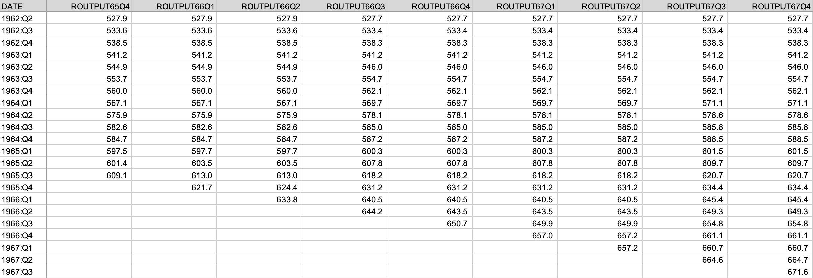
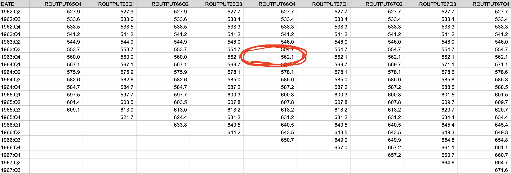
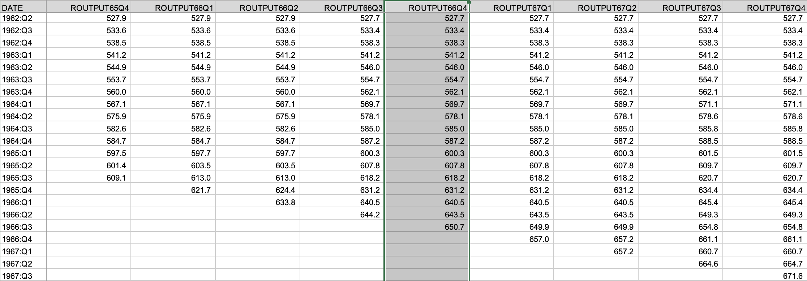
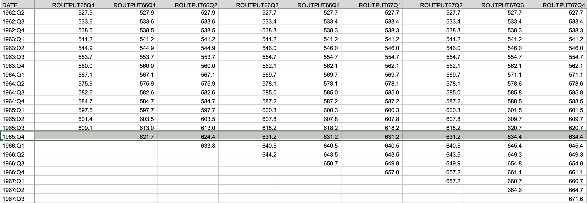
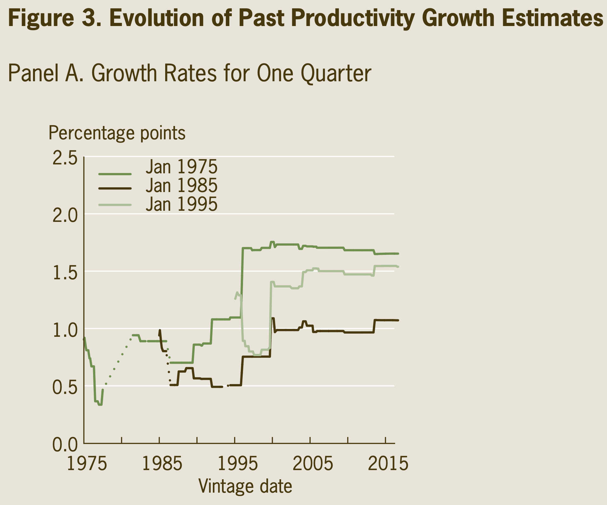

Case Study 2
Revisions to macroeconomic data
Ed Iversen and John Zito
Duke University
STA 440 Spring 2026
Macroeconomic data
A few US macro aggregates
There are hundreds more. Play around on FRED!
Where do these data come from?
Bureau of Labor Statistics (under the Labor Department)
Bureau of Economic Analysis (under the Commerce Department)
And many many more!
Who cares?
These are some of the most talked about data in the world. They are constantly being studied by…
| Academics | “how does the macroeconomy…work?” |
| Policymakers | “what effect did our actions have?” |
| Businesses | “how do we plan for the future?” |
| Journalists | each new release is a major headline… |
| Investors | …followed by a second headline about how the stock and bond markets reacted. |
Did I leave anybody out?
Oh, right.
What happened?
At 8:30 AM ET on Friday August 1, 2025, the BLS issued its regular monthly report on the US employment situation;
-
It includes total nonfarm payroll employment:
a measure of the number of U.S. workers in the economy that excludes proprietors, private household employees, unpaid volunteers, farm employees, and the unincorporated self-employed. This measure accounts for approximately 80 percent of the workers who contribute to Gross Domestic Product (GDP). This measure provides useful insights into the current economic situation because it can represent the number of jobs added or lost in an economy.
Presidents want to take credit for this going up each month.
What happened?
The August 1 report announced the initial release of the July numbers, as well as revisions to the May and June numbers:

What happened?
The Commissioner of Labor Statistics was fired that afternoon:


Revisions?
Whence revisions?
From the BLS report (and more here):
Monthly revisions result from additional reports received from businesses and government agencies since the last published estimates and from the recalculation of seasonal factors.
The statistical agencies announce an initial estimate with a one period lag, but they continue to revise the measurement (sometimes years later) as new information arrives and measurement techniques improve.
Real-time data
The Federal Reserve Bank of Philadelphia publishes a real-time dataset of key macroeconomic variables that allows you to see how the data were revised from initial release all the way to the present.
What are the data like?
Example: quarterly data on gross domestic product (GDP).

Each variable gets this triangular array. The rows correspond to the period in time we are trying to measure. The columns correspond to when we are measuring it. This is the so-called vintage of the data.
What are the data like?
Example: quarterly data on gross domestic product (GDP).

This is our estimate of GDP for 1963Q4 as measured in 1966Q4.
What are the data like?
Example: quarterly data on gross domestic product (GDP).

This column is the 1966Q4 vintage of the data. This was the best information that an observer in 1966Q4 had access to.
What are the data like?
Example: quarterly data on gross domestic product (GDP).

This row shows the path of revisions for the 1965Q4 observation. We got out first reading in 1966Q1 (one period later), and then it was subsequently revised several times.
The path of revisions over time

How do revisions behave?

How do data revisions behave?
We document the empirical properties of revisions to major macroeconomic variables in the United States. Our findings suggest that they do not satisfy simple desirable statistical properties. In particular, we find that these revisions do not have a zero mean, which indicates that the initial announcements by statistical agencies are biased. We also find that the revisions are quite large compared to the original variables and they are predictable using the information set at the time of the initial announcement, which means that the initial announcements of statistical agencies are not rational forecasts.
Bummer.
Case Study 2
Your task
Each of you will be given a target variable. Then:
- Develop a model that can predict the “final value” using only information available at the time of the initial release;
- You must quantify uncertainty. Point predictions are not enough. You need to produce and evaluate full predictive distributions that incorporate as many sources of uncertainty as possible.
Deadlines
- EDA (Wed 2/11): explore the data, but also research the data collection process for your target variable;
- Analysis (Wed 2/18): present prediction metrics for the models you considered, and try to explain why certain approaches worked better than others;
- Final submission (Mon 2/23).
Lecture topics
- Autoregressive moving average (ARMA) models;
- Dynamic linear models (DLMs);
- Probabilistic prediction;
- Time series cross-validation (“leave-future-out”).
Words of caution
- The data come in this funky, unfamiliar form: each variable gets its own spreadsheet in this triangular format (row = period being measured; column = vintage). How are you going to deal with that?
- There already exists a massive literature on this, which you are welcome to explore. However, you will quickly become overwhelmed if you’re not careful. That’s part of the challenge!
- Black box machine learning methods may or may not work well here, but if you don’t know how to get predictive uncertainty quantification from them, or you find that the UQ is unreliable, then say goodbye to
XGBoost!
Probabilistic prediction
Not just point prediction

Point prediction
Your single-number best guess at tomorrow’s observation:

Prediction interval
A range of likely values for tomorrow’s observation:

Prediction distribution (density)
Full distribution capturing uncertainty about tomorrow:

And then tomorrow finally comes
So…how’d we do?

What’s the point?
We want intervals and densities to communicate uncertainty about the prediction;
-
What sources of uncertainty?
- Basic data uncertainty;
- Parameter estimation uncertainty;
- Hyperparameter uncertainty;
- Model uncertainty;
- Uncertainty introduced by missing data;
- Many more!